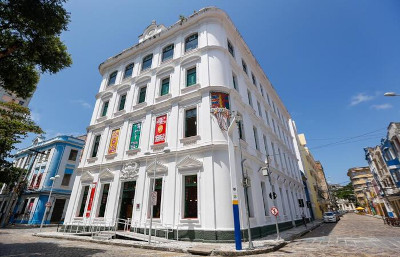

Sinagoga Kahal Zur Israel
A Sinagoga Kahal Zur Israel (que significa "Rocha de Israel") é uma sinagoga localizada na cidade do Recife, no estado de Pernambuco, no Brasil. Suas instalações compreendem hoje o Arquivo Histórico Judaico de Pernambuco, no bairro do Recife, no centro histórico da cidade. Foi a primeira sinagoga das Américas.

Ela funcionou em Pernambuco durante o período de dominação holandesa de 1630 a 1657. Durante esse período emigraram para o Recife milhares de judeus sefarditas de origem portuguesa, refugiados nos Países Baixos, que vieram para a então colônia holandesa atraídos pela liberdade de culto religioso. Seu primeiro rabino foi o luso-holandês Isaac Aboab da Fonseca (1605-1693) que chegou ao Recife em 1641 e ficou por lá durante 13 anos. Derrotados na Batalha dos Guararapes, fruto da Insurreição Pernambucana, as famílias judias retornaram para a Holanda a bordo do navio Valk. O desembarque ocorreu em Nova Amsterdã, atual Nova York, onde os judeus formaram a Congregação Shearith Israel, a primeira comunidade judaica da América do Norte.
Os primeiros judeus chegados à cidade norte-americana de Nova Iorque, fundadores da primeira sinagoga local, eram refugiados do Recife e membros da sinagoga Kahal Zur Israel.
Paço do Frevo
O Paço do Frevo é um centro de referência de ações, projetos e atividades de documentação, transmissão, salvaguarda e valorização de uma das principais tradições culturais brasileiras, reconhecida como Patrimônio Imaterial da Humanidade pela Unesco: o frevo. Um lugar para estudar, criar, experimentar e vivenciar o rico universo de histórias, personalidades, memórias e linguagens artísticas.
Localizado no Bairro do Recife, o Paço tem curadoria assinada por Bia Lessa. Além de se valer de conteúdos e linguagens diversas para manter vivo o ritmo que embalou a formação da identidade cultural recifense, o equipamento promove oficinas e apresentações musicais regulares em quatro pavimentos de atividades, que oferecem aos visitantes a possibilidade de experimentar o Carnaval recifense durante todo o ano.
O imóvel onde está instalado o museu é um capítulo à parte na rica história do equipamento, tendo abrigado até 1973 a Western Telegraph Company, empresa pioneira na implantação do telégrafo no Brasil. Hoje, ele faz parte do complexo turístico das cidades de Recife e Olinda e é tombado pelo IPHAN desde 1998.